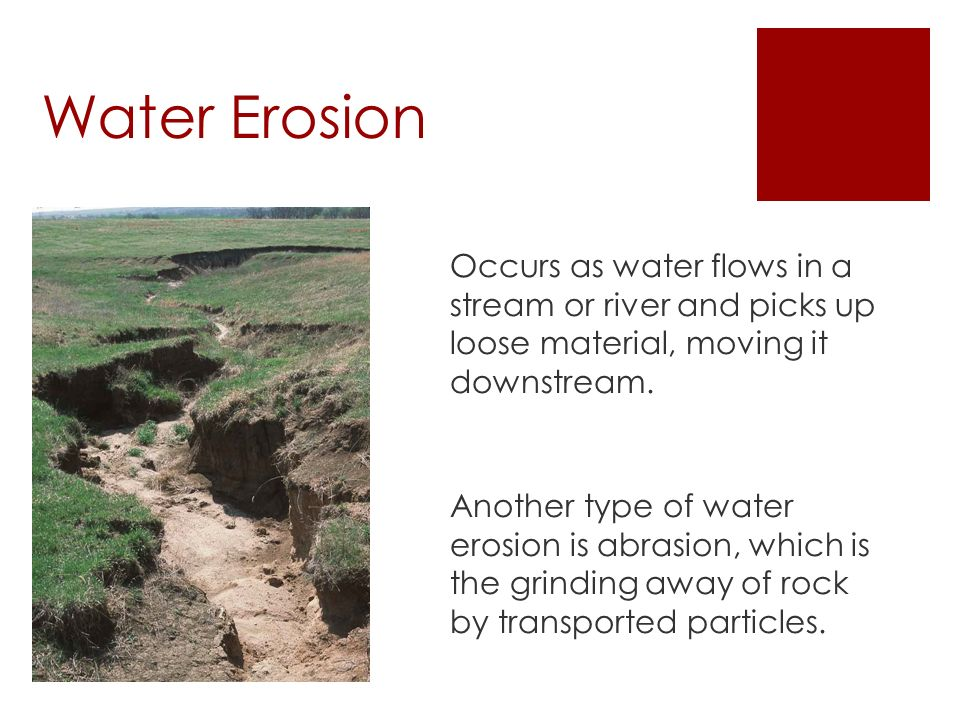

HOME ABOUT CONTACT US FEEDBACKS
Water erosion occurs when rain or snowmelt displaces the soil on the ground. The more water flowing over the land, the more soil particles are moved or transported away. Land that has no vegetation-including farm fields that are left barren after crop harvest-are especially vulnerable to water erosion. Since there's no vegetation to absorb the water, hold dirt in place, or break up the energy of falling raindrops, a rainstorm leads to increased runoff and erosion. Intense weather events (heavy rains, flash floods, and rapid snowmelt) can lead to more rapid soil erosion.
In 2019 the Midwest saw weeks of intense spring rainstorms that left large parts of the region under water and eroded the famously fertile landscape. A farmer in northern Missouri described the scenes to a news outlet: "I have seen water flowing across the fields washing soil away...I've seen sand in fields... A lot of farms are really badly impacted."
For water to cause erosion and harm to farm fields, several factors come into play. Damage is more likely to occur if a great deal of rainfall and water runoff flows over the land during storms. Soil type, quality, and texture-the combination of soil particle size and how loosely or densely the particles are compacted-also influence the erodibility of a field's soil. Other factors are the length and slope of a piece of land, which can affect the speed and strength of water runoff. (That's one reason farms built on steep hillsides-often as a result of limited arable land-can be susceptible to devastating soil erosion and washouts.)
Vegetation-typical cropping as well as the strategic use of cover crops -can buffer the impact water has on a farm field. Land managers may also mitigate soil erosion through selective tillage practices. Typically, farmers till their soils to prepare fields for seed planting, control weeds, and retain moisture. But decades of agricultural research has revealed that a less-is-more approach may be the best way to minimize soil erosion. In other words, reducing mechanical disturbance to farm fields may help preserve soil.
Water, though vital for life and agriculture, can be incredibly corrosive. Every raindrop splash has the potential to impact the structure of soil.
Below are three Common types of Water Erosion:
© All Rights Reserved